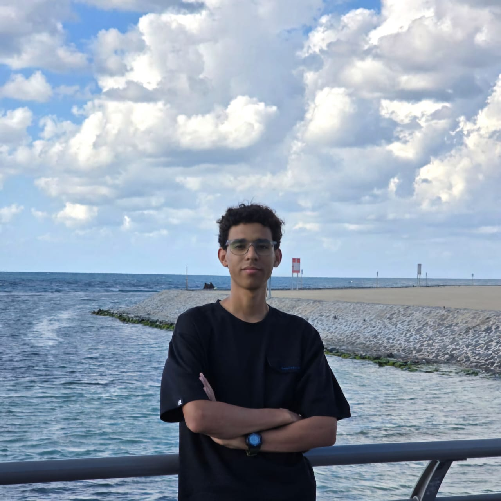
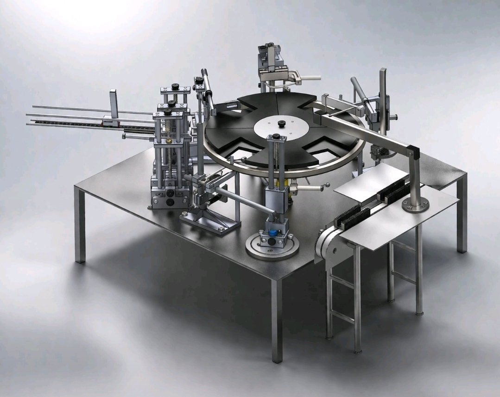
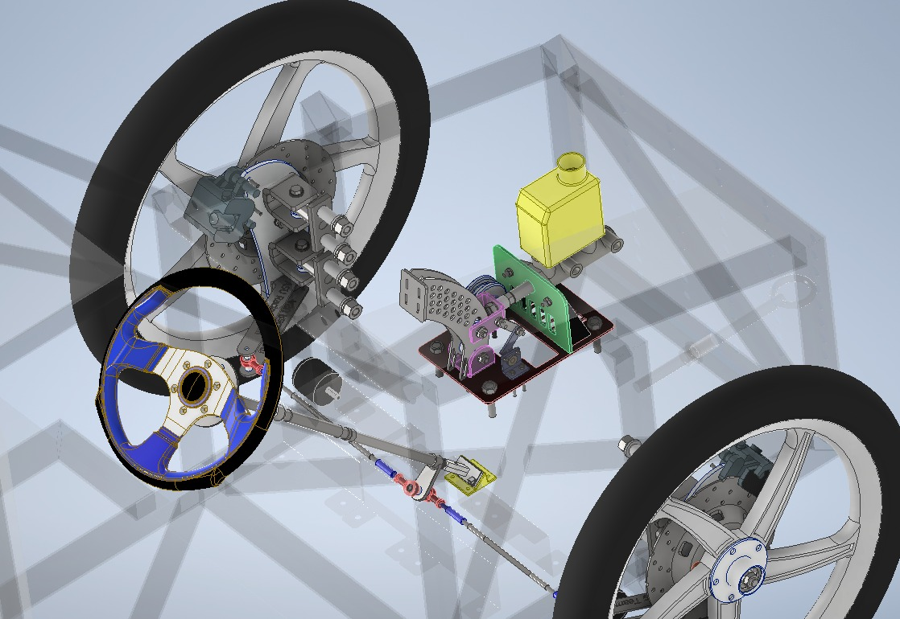
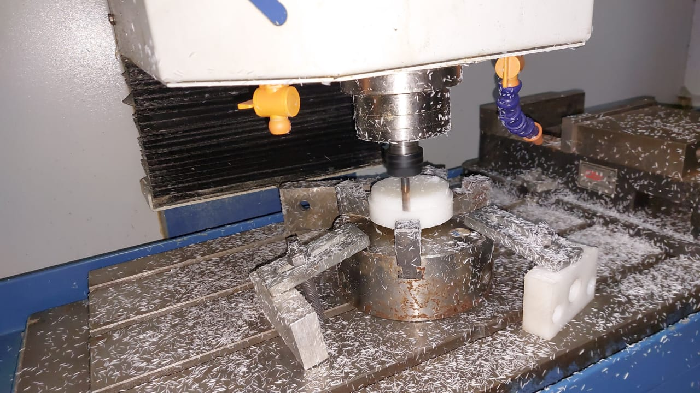
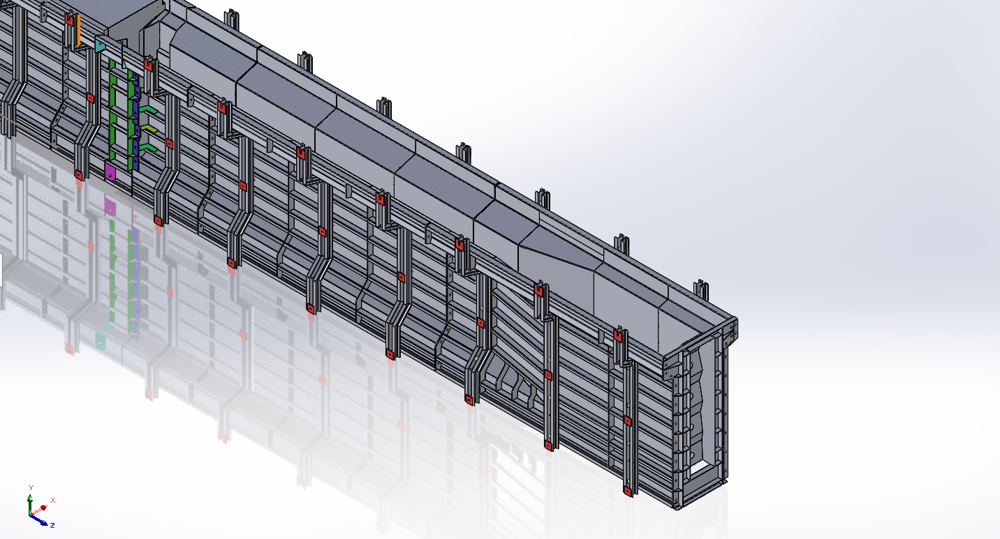
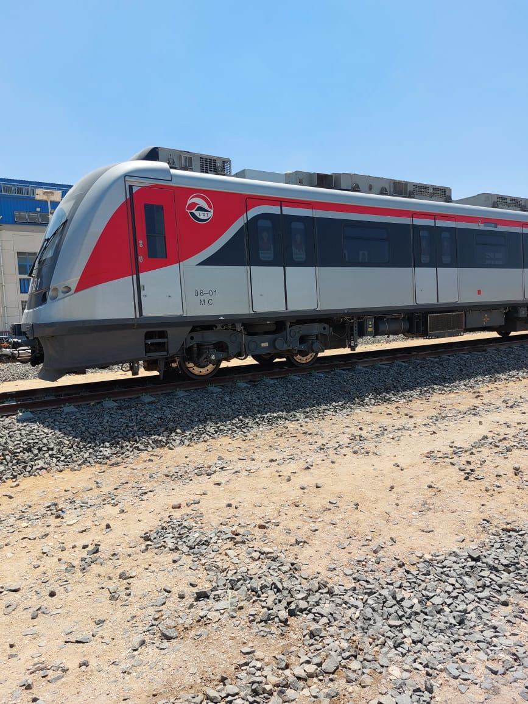
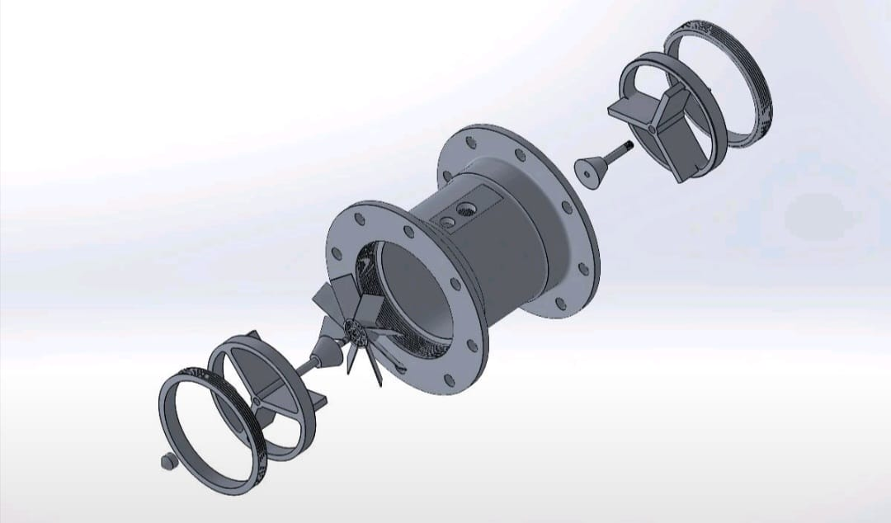
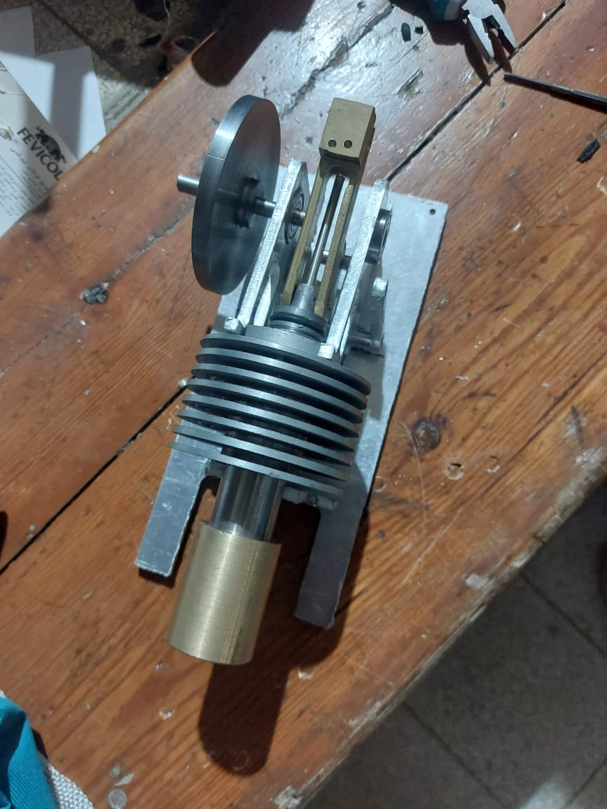

Mechanical Design & Production Engineering
Specialized in mechanical design fundamentals, mechanism synthesis, and advanced CAD/CAE. Proficient in Stress Analysis (FEA), Design for Manufacturing (DFM), and Design for Assembly (DFA).







Awarded first place for highest accuracy and best manufacturing. Designed and fabricated a full vortex-shedding flow meter from scratch, handling CAD, casting, and precision CNC machining.

Designed and fabricated a fully metallic mechanism, focusing on precision manufacturing, toughened steel components, and high-tolerance integration to ensure smooth mechanical motion.
CAD / CAE / CAM
Professional Skills
Education
Looking for a motivated mechanical design intern or collaborator? I'm open to opportunities and projects.